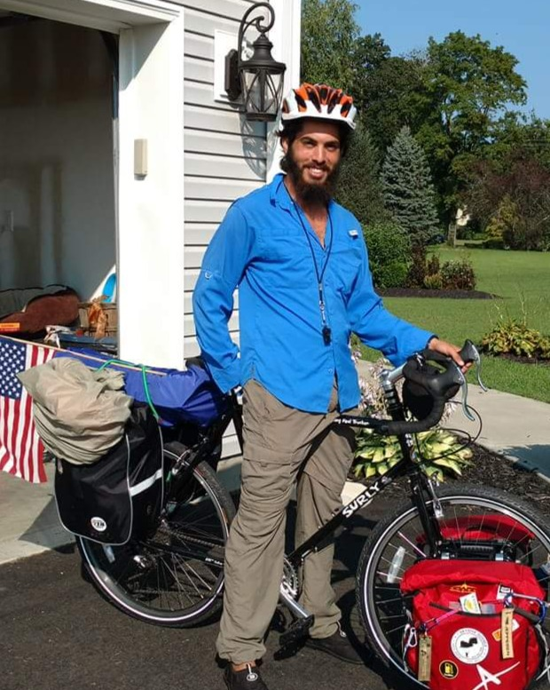
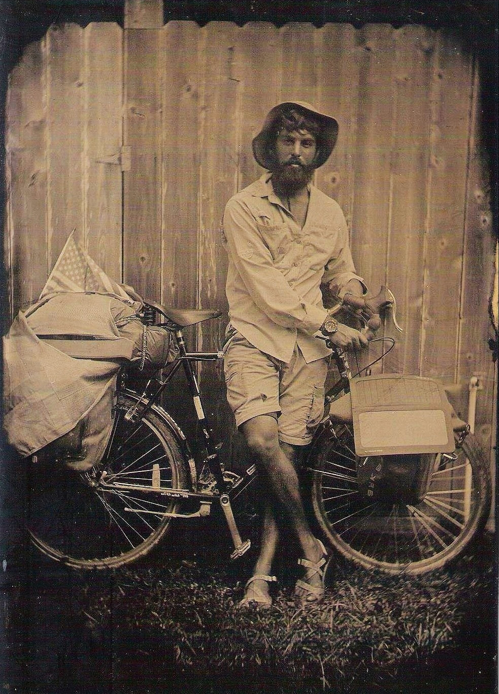

Yann Cohen
Analyste de données
Web Designer
Aventurier
Analyste de données
Web Designer
Aventurier
J’adore les Données, J’adore le Design.
📍 Martinique
J’adore les Données, J’adore le Design.
📍 Martinique
Data Analyst et diplômé en Psychologie, basé en Martinique 🌴🏖️.
Doté d'un esprit aventureux et d'une forte pensée analytique, je suis convaincu qu'aucun projet n'est trop petit. Du nettoyage et de la visualisation de données à la modélisation prédictive avancée, mon objectif est de fournir des insights exploitables pour guider des décisions impactantes.
Une communication ouverte est la clé de tout partenariat réussi 👌.
Quand je ne conçois pas de tableaux de bord, vous me trouverez probablement à 4000 mètres d'altitude, en train de sauter d'un avion (60 sauts au compteur...) 🪂.


Au tout début, lorsque j’ai commencé à voyager, j’ai adopté ce nom de famille pour faire comprendre aux gens autour de moi - et surtout à moi-même - que ce voyage n’était pas une plaisanterie. Laissez-moi (essayer de) reprendre depuis le début.
Quelque part en Australie, en 2017, j’ai eu l’idée de parcourir le globe à vélo du nord au sud. Quelques mois plus tard, le 21 août 2018, j’ai quitté Brooklyn, New York, direction le nord. Le vrai nord: l’Alaska.
Je suis ensuite redescendu vers le sud, zigzaguant entre les côtes, les déserts et les vallées de ce vaste pays, avant d’entrer au Mexique. Quelques mois plus tard, le monde allait changer: le COVID. En 2020, je me suis retrouvé au Costa Rica, incapable de continuer plus au sud, j’ai décidé de rentrer chez moi. Le vélo, lui, est resté là-bas.
Avançons jusqu’en novembre 2024 (vous pouvez lire dans les sections ci-dessus ce que j’ai fait entre-temps). J’ai pris un vol pour retourner au Costa Rica et relancer mon voyage à vélo avec l’objectif d’atteindre ma destination: Ushuaïa, fin del mundo.


Je ne suis pas pressé. Comme le dit si bien l’un des podcasts ci-dessous, je ne fais pas que rouler: je zigzague. Je me suis donc retrouvé à pédaler dans les hautes Andes, l’immense Amazonie et - au moment où j’écris ces lignes - à préparer une aventure en bateau-stop pour rejoindre la Martinique, une île française des Caraïbes.
Si vous voulez lire, écouter ou regarder davantage, consultez les liens ci-dessous. Et si vous souhaitez me contacter - en tant que programmeur ou aventurier - je serai toujours heureux de partager cette expérience.